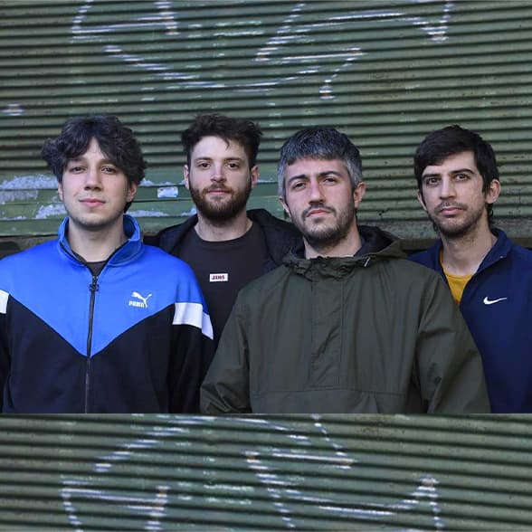

Biografia

Bestia Bebé se forma en el verano del 2012 en el barrio porteño de Boedo. La banda está integrada por Tom Quintans (Voz y guitarra), Polaco Ocorso (Batería) y Chicho Guisolfi (Bajo). Canciones sobre los amigos, el amor en todas sus variantes, el futbol, los perros, los autos, las vivencias personales y todo lo que rodea a los Bestia Bebé. Llevan editados cuatro LP´s: "Bestia Bebé" (2013), "Jungla de Metal 2" (2015), el recopilatorio de Lados B "Las Pruebas Destructivas" (2017) y "Gracias Por Nada" (2020). Bestia Bebé siempre se caracterizó por tocar mucho en vivo, camino que los llevó a viajar por toda la Argentina, España, México, Perú, Chile, Costa Rica, Brasil, Paraguay y Uruguay.